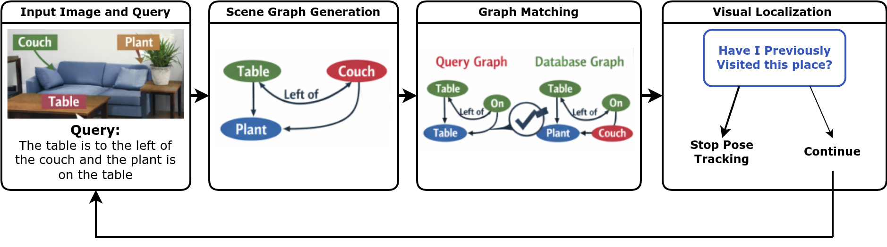
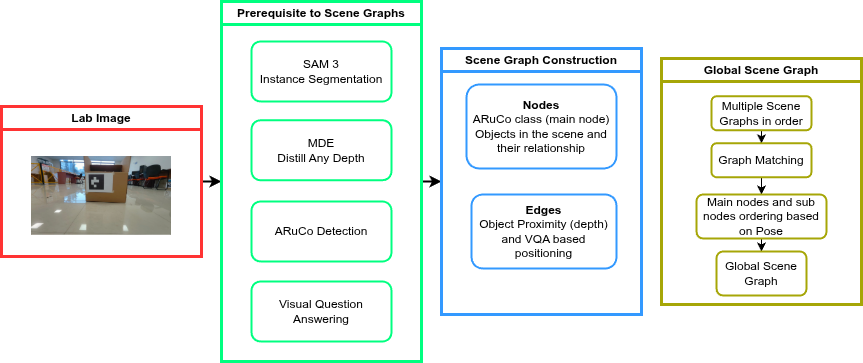
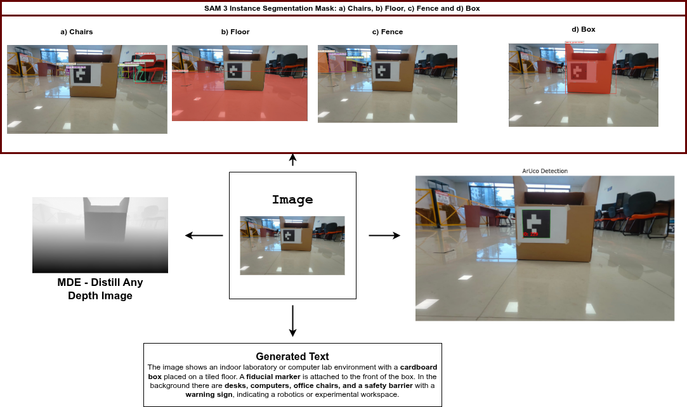
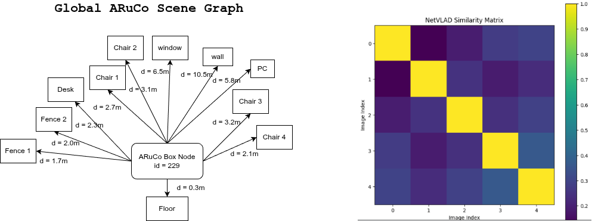

Visual Localization enables a robot to estimate and correct its pose within a 2D/3D environment during navigation or autonomous operation. In Simultaneous Localization and Mapping (SLAM) systems, visual localization plays a critical role in detecting loop closures, which are essential for reducing drift and improving global consistency through Pose Graph Optimization (PGO).
Over the years, several approaches have been proposed for loop closure detection and visual localization. Traditional methods rely on Bag-of-Visual-Words (BoVW) representations that require a pre-constructed visual dictionary for image retrieval. More recent approaches leverage deep learning–based global descriptors, such as NetVLAD, to compute image similarities in a learned embedding space.

More recently, scene graph–based representations have emerged as a promising direction for structured environment understanding. Scene graphs encode spatial relationships between objects and landmarks, enabling robust place recognition beyond appearance-based matching.
This work presents a detailed analysis of Spatial Scene Graph generation using ARuCo fiducial markers to construct a Global ARuCo Scene Graph representation of the environment. The proposed representation captures spatial relationships between markers, enabling robust loop closure detection even under viewpoint variations. The performance of this graph-based localization approach is evaluated and compared against NetVLAD-based image similarity methods for visual place recognition.
Visual scenes can be represented as structured graphs that encode objects and their spatial relationships. In this work, we construct a Spatial Scene Graph centered around ARuCo fiducial markers to enable robust visual localization and loop closure detection.
Given an input scene image $I$ and the corresponding depth map $D$, the generated scene graph is defined as:
$$\mathcal{G}_S = \{\mathcal{N}_S, \mathcal{E}_S\}$$Thus, the final Spatial Scene Graph encodes the structural relationships between scene objects and the ARuCo marker, enabling robust scene representation for visual localization.

Figure 2 illustrates the prerequisites for constructing the scene graph and estimating object positions, with the ARuCo marker serving as the primary reference node. Figure 3 presents the intermediate outputs of the pipeline, including instance masks from the SAM3 model, ARuCo detection using OpenCV, depth maps from the Distill Any Depth model, and prompts generated by the VLM.

Figure 4 compares the globally generated scene graph with the NetVLAD-based similarity matrix, both utilized for visual place recognition within the 3D reconstruction pipeline.

If you find this work useful for your research, please consider citing it once published: